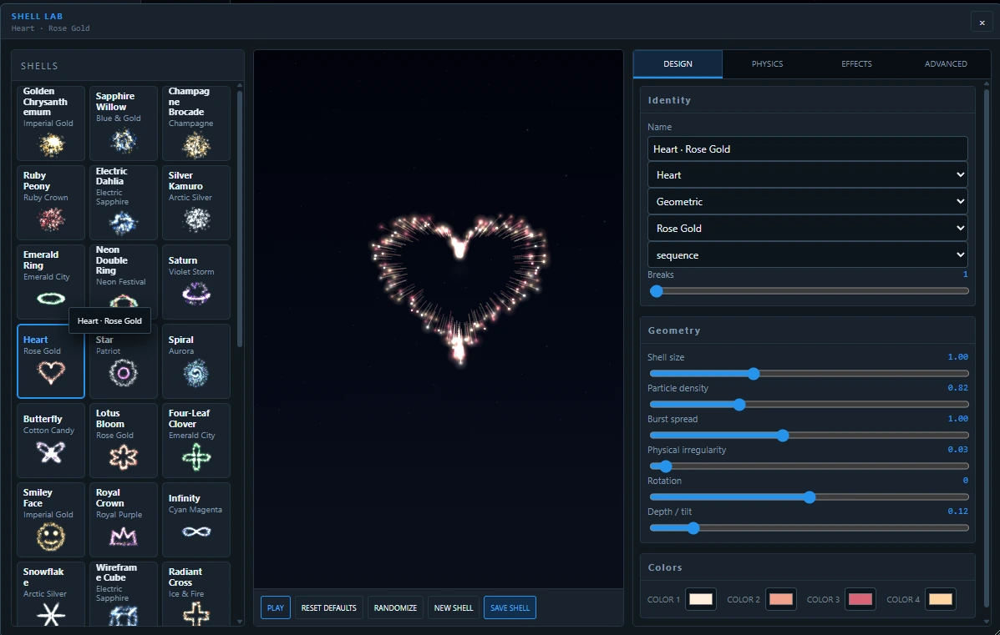
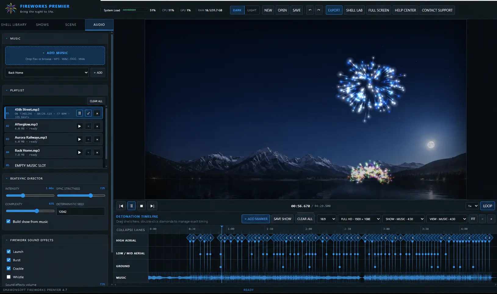
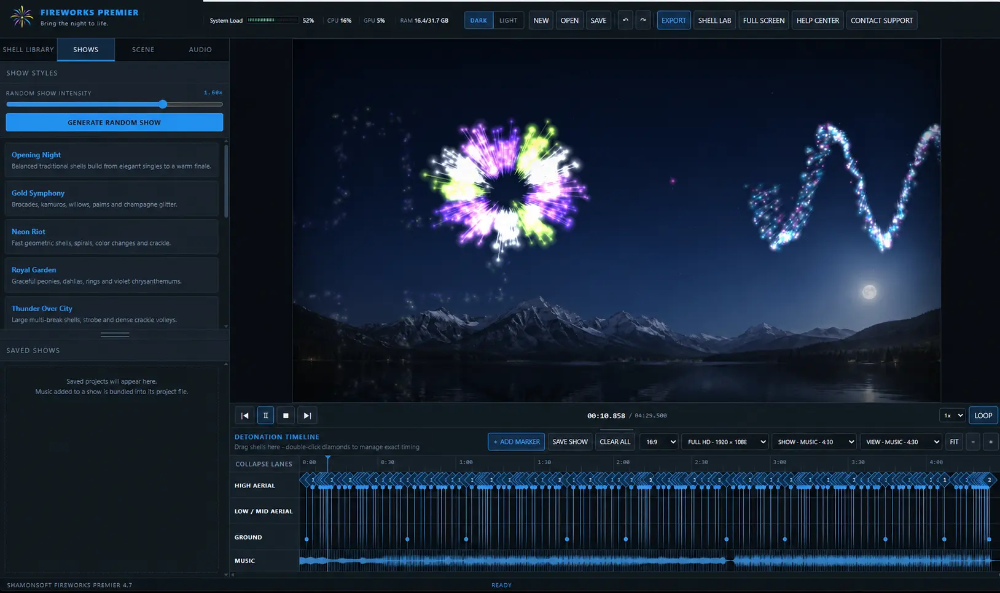
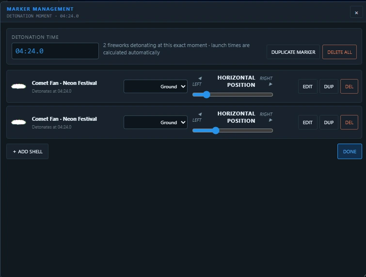

Choreograph your own fireworks show.
Pick a soundtrack and decide what goes up on each beat. Start with one of 159 ready-made shells, or build your own in Shell Lab and preview how it bursts before you add it to the show.
The Windows app has an interface in 12 languages.

Make a shell your own.
Open a shell in Shell Lab and change its shape, colors, trails or timing. Draw a custom burst or build a shell that opens in stages, then preview it as you work.

Let BeatSync lay out the first pass.
Load a song and let BeatSync place bursts on the timeline. Then move a cue, swap a shell or save the big finale for the last chorus.

Start with a show or a blank timeline.
Pick a built-in show style, generate a random show or place each cue by hand. You can edit any show after you start.

Place each burst where you want it.
Put several shells on one cue or spread them across the scene. Choose when each shell should burst and Fireworks Premier works out when to launch it.
Watch Fireworks Premier in action.
Take a guided feature tour of the show-building workflow, timeline tools, Shell Lab and music synchronization.
Watch on YouTube